Компания - научно-исследовательский институт, работающий в области ракетного двигателестроения и космической энергетики. Выполняя научно-исследовательские и опытно-конструкторские работы, производится высокотехнологичная наукоемкая продукция научно-технического характера в области ракетно-космической техники, а также продукция социально-экономического назначения.
Основные направления научно-производственной деятельности
- Ракетно-космическое двигателестроение
- Ракетно-космическая энергетика
- Системы и элементы ракетно-космических комплексов
- Нанотехнологии
- Водородная энергетика
Введение
Плазмотроны - генераторы низкотемпературной плотной плазмы - нашли самое широкое применение разных областях человеческой деятельности, особенно в промышленности, благодаря своим уникальным свойствам и возможностям. B плазмотронах получают потоки плазмообразующего вещества с высокой температурой и энтальпией, которые не достигаются другими средствами, а также получают плазму практически любого вещества. Плазма обладает рядом новых свойств как, например, электропроводность, высокая энергоемкость и реакционноспсобность, обеспечивающих ей применение в различных отраслях техники. Процессы с использованием плазмы находят все более широкое применение в технологии обработки материалов - сварке, резке, напылении тугоплавких материалов, в металлургии редких металлов и качественных сплавов, в химической технологии. Плазма находит применение в энергетических установках – МГД - генераторах, котлоагрегатах паросиловых установок.
Плазмотроны работают в составе сопутствующей инфраструктуры и систем автоматизации и контроля их технологических параметров. Разработка таких эффективных систем, позволяющих удаленно работать с плазмотронами и контролировать их параметры в целях предотвращения аварийных ситуаций, что является актуальной задачей для специалистов в области автоматизации.
Вышесказанное, подтверждает актуальность темы дипломного проекта «Разработка системы контроля режимов работы электродугового подогревателя средней мощности».
Объектом исследования является система контроля режимов работы электродугового подогревателя средней мощности.
Предметом исследования является автоматизация контроля режимов работы электродугового подогревателя средней мощности.
Причины, по которым был выбран именно этот объект исследования следующие:
- Широкое применение данного устройства в промышленности.
- Актуальность объекта исследования для потребностей промышленности.
- Высоким уровнем научно-технического содержания объекта исследования.
Целью дипломного проектирования является разработка автоматизированной системы контроля режимов работы электродугового подогревателя средней мощности.
Задачи дипломного проектирования:
- Разработать систему автоматизированного контроля режимов работы электродуговым подогревателем средней мощности: разработать схему, провести анализ и выбор оборудования.
- Провести сборку, монтаж и отладку системы в составе представленного электродугового подогревателя средней мощности.
Основная часть
Разрабатываемая система контроля режимов работы электродугового подогревателя должна обеспечивать контроль физических параметров, реализующихся в подсистемах плазмотрона, таких как давления, расходы, температуры, токи и др., их соответствие заданным диапазонам, визуализацию в интерфейсе программы оператора, а также формирование управляющих сигналов в случае возникновения нештатных ситуаций по контролируемым параметрам. Для проектирования такой системы необходимо провести обзор специфики работы плазмотронов и систем контроля их режимных параметров, а также сформировать технической задание на разрабатываемую систему.
Схема комбинированная принципиальная систем электродугового подогревателя
Для работы представленного электродугового подогревателя необходимы перифирийные системы, которые обеспечивают его работоспособность, снабжение энергией, а также рабочим телом. В рамках выполняемой работе данные системы были доработаны с точки зрения интегарции в них приборов, обеспечивающих функции автоматизации и контроля режимов работы. На Рисунке 2 представлена схема комбинированная принципиальная таких систем.
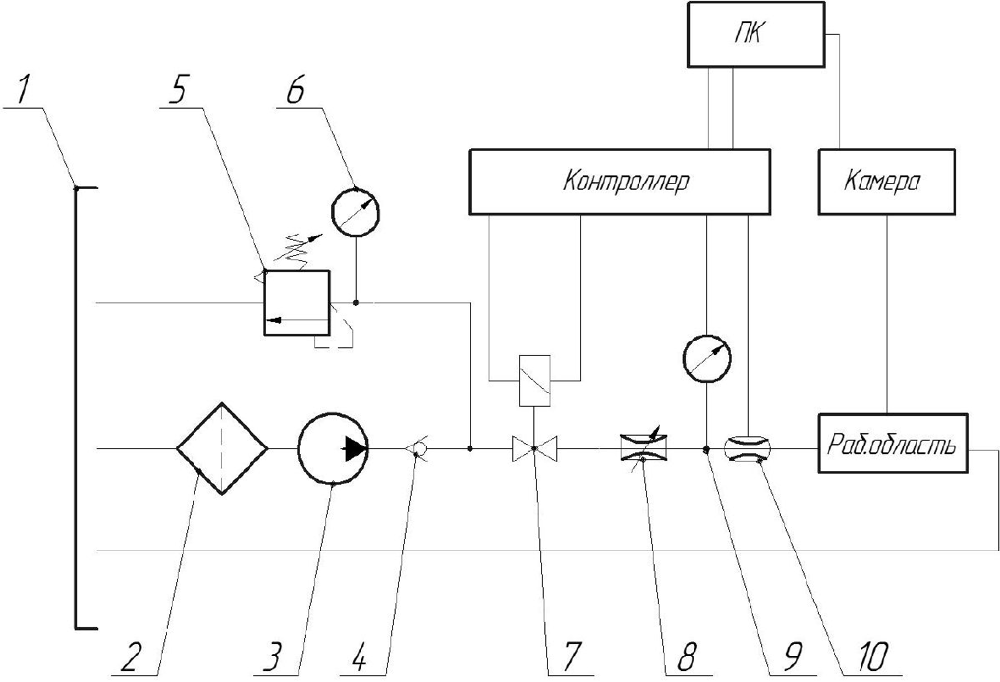
Техническое задание на систему контроля режимов работы электродугового подогревателя
Согласно спецификациям и требованиям, предъявляемым к представленному плазмотрону, было разработано техническое задание на систему контроля режимов его работы. Содержательная часть технического задания, необходимая для разработки системы, представлена ниже.
Разрабатываемая система контроля режимов работы должна обеспечивать:
- регистрацию режимных параметров таких как: давления, расходы, температуры согласно схеме (рисунок 2);
- автоматизацию процесса запуска электродугового подогервателя;
- контроль режимных параметров, их соответствие допустимым диапазонам, а также формирование соответствующих сигналов в случае отклонений;
- отображение параметров работы изделия на экране ПК.
Автоматизированная система контроля режимных параметров работы плазмотрона
На основании представленных данных в виде схемы комбинированной принципиальной систем (Рисунок 2), а также техническому заданию (п. 1.4) была разработана автоматизированная система контроля режимных параметров работы плазмотрона. Схема электрическая принципипальная системы предствалена на Рисунке 3. Система построена на базе крейтовой (магистрально-модульной) системы CompactDAQ компании NationalInstruments и состоит непосредственно из самого крейта с набором стандартизованных модулей, к которым подключена соответствующая датчиковая аппаратура согласно схеме Рисунок 2.
Модуль NI 9208 является унифицированным модулем, оцифровывающим аналоговый сигнал 4…20 мА. Такой сигнал в рамках разрабатываемой системы формируется датчиками давления, а также датчиком тока.
Модуль NI 9220 является унифицированным модулем, оцифровывающим аналоговый сигнал 0…10 В. Такой сигнал, в рамках разрабатываемой системы, формируется датчиком напряжения и расходомером системы охлаждения.
Модуль NI 9375 является унифицированным цифровым модулем, формирующим управляющие сигналы 12…24 В для управления промежуточными реле. Такой сигнал, в рамках разрабатываемой системы, управляет промежуточными реле КМ1, КМ2.
Датчиковая аппаратура, представленная на Рисунке 3 в поле «Бокс», соответствует выбранной по Рисунку 2 и имеет аналогичные обозначения. Сама датчиковая аппаратура располагается в испытательном боксе в непосредственной близости к плазматрону. Модули и крейт в безопасном помещении – пультовой.
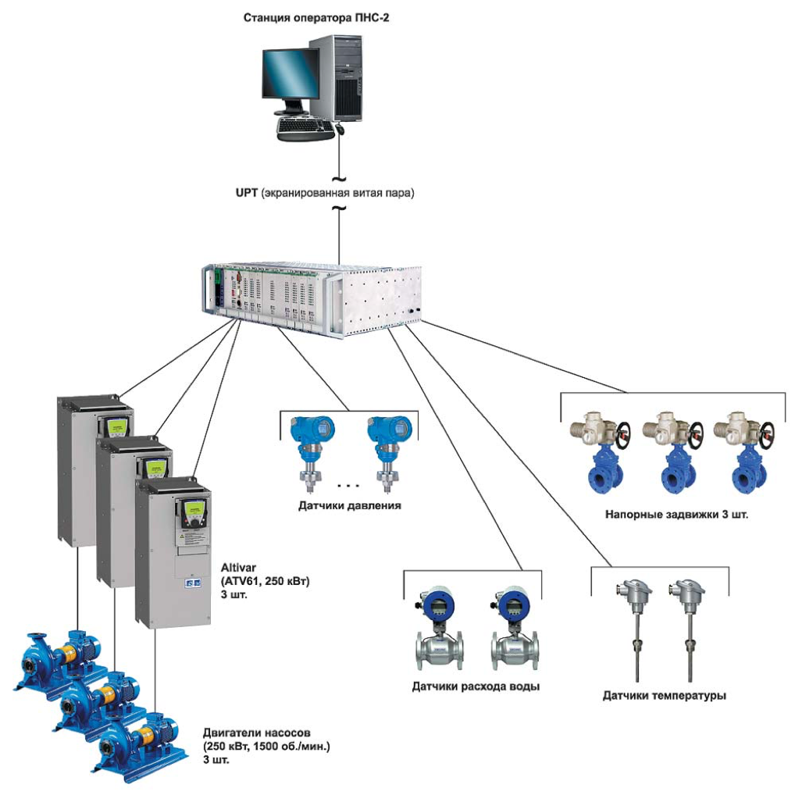
Подбор и обоснование оборудования
Рассмотрим средства контроля режимов работы плазматрона детально.
Датчик давления МИДА-ДИ-13П-У2-0,5/0,4МПа-01-М20
Датчики используют для преобразования давления в электрический сигнал тензочувствительные преобразователи (ТП) на основе гетероэпитаксиальных структур «Кремний на сапфире» (КНС), что обеспечивает высокую точность, стабильность и надежность приборов.
Датчики серии МИДА-13П предназначены для измерения избыточного (ДИ), абсолютного (ДА) давления, разрежения (ДВ) и избыточного давления-разрежения (ДИВ).
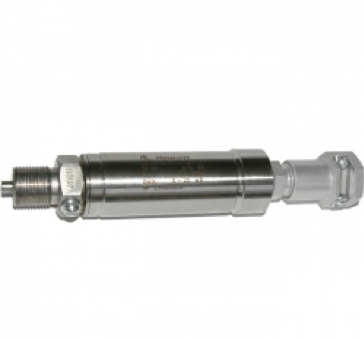
Турбинный расходомер Blancett 1100
Blancett 1100 относится к классу турбинных расходомеров. Модель предназначена для измерения расхода жидкостей в трубопроводах типоразмера от ½" до 10" с величиной расхода до 18927 л/мин при точности ±1%. Конструктивно прибор отличается повышенной прочностью. Его корпус и ротор выполнены из стали, а ось и подшипники из карбида вольфрама. Всё это позволяет расходомеру работать под высокими давлением и температурой, обеспечивая надежную работу в течение длительного срока эксплуатации. Общий вид приведен на Рисунке 6.
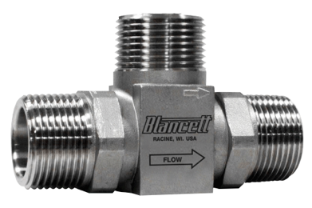
Отсечной клапан Т210
Отсечной клапан применяется в случае необходимости срочного отключения агрегата или трубопровода. Такая необходимости может возникнуть в аварийных ситуациях или ситуациях, близких к аварийной. Отсечная арматура не реагирует на изменение среды, она приходит в действие подачей сигнала от специальных датчиков. Также она может приводиться в действие персоналом. Общий вид клапана представлен на Рисунке 7.
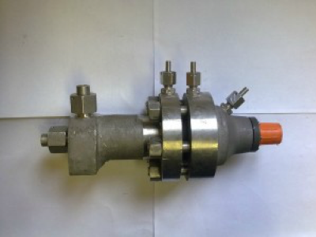
Промежуточное реле OIR 3 конт. (16 А) 24 В, АС/DC IEK
Промежуточное реле - предназначено для гальванической развязки и передачи команд управления исполнительным элементам, между силовыми цепями и цепями управления. На рисунке 8 приведены общий вид и схема подключения промежуточного реле.
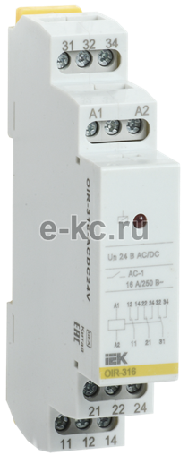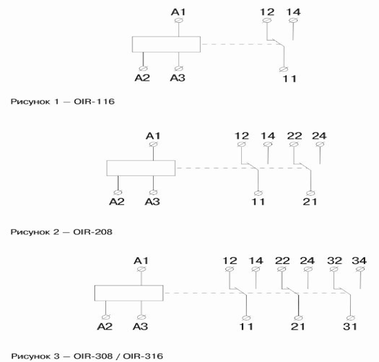
Три контактных группы, с коммутационной возможностью до 16А каждая. Номинальное напряжение катушки реле 24В AC/DC. Обеспечение гальванической развязки и коммутации силовых и сигнальных цепей. Управление тремя силовыми и сигнальными цепями по одной команде. Простая удобная индикация работы. Крепление на стандартную 35мм DIN-рейку. Корпус из не поддерживающих горение материалов.
Датчик тока ДТХ 5-30
Датчик измерения тока на эффекте холла ДТХ 5-30 - предназначен для измерения постоянного, переменного и импульсного токов с гальванической развязкой силовой цепи и цепи контроля. Датчик может быть использован в различных цепях телеметрии.
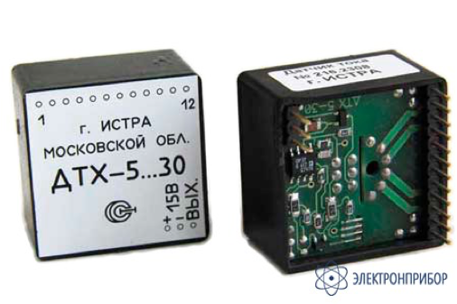
Датчик давления МИДА-ДИ-13П-У2-0,5/0,25МПа-01-М20
Датчики используют для преобразования давления в электрический сигнал тензочувствительные преобразователи (ТП) на основе гетероэпитаксиальных структур «Кремний на сапфире» (КНС), что обеспечивает высокую точность, стабильность и надежность приборов.
Датчики серии МИДА-13П предназначены для измерения избыточного (ДИ), абсолютного (ДА) давления, разрежения (ДВ) и избыточного давления-разрежения (ДИВ).
Модуль входного напряжения серии C NI-9220
Измеряет сигналы входного напряжения для систем CompactDAQ или CompactRIO. Модули также обеспечивают гальваническую развязку и защиту от перегрузки по току для высоковольтных областей применения.
Модули ввода напряжения С - серии предоставляют эффективное сочетание количества, разрешения и скорости каналов, предназначенных для удовлетворения нужд всех задач измерения напряжения. Гальваническая развязка в модулях может отделять каналы друг от друга, от COM и заземления для обеспечения безопасности, защиты от помех и большого диапазона трёхфазного напряжения. Модули оснащены защитой от перегрузки по напряжению до 100 В на случай сбоев сигнального соединения или подачи непредусмотренных сигналов на отдельные каналы. Дополнительно доступны модули с настраиваемыми входными диапазонами, каналами вывода, различными разъёмами, а также в корпусе и без него. На Рисунке 12 представлен общий вид модуля напряжения серии C NI-9220
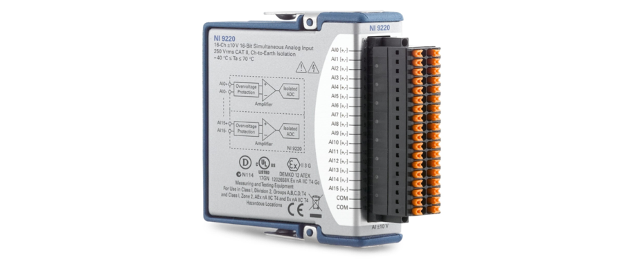
16 - канальный 16 – бит модуль ввода напряжения C - серии, парал. ввод, ±10 В, 100кВыб/с/канал – NI 9220 осуществляет одновременный дифференциальный аналоговый ввод с изоляцией категории II (250 В ср. кв.) или категории I (60 В пост. тока). При максимальной частоте дискретизации модуль способен генерировать данные со скоростью до 3,2 Мбайт/с. Для NI 9220 доступны два варианта разъемов: 36 контактный разъём с пружинными клеммами и 37 контактный разъем D SUB.
NI-9220 имеет 16 каналов одновременного аналогового ввода, ±10 V, и 16 разрядов. Схема расположения выводов указана на Рисунке 13.
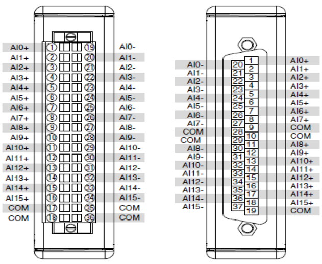
| Сигнал | Описание |
|---|---|
| AI+ | + Вход подключения аналогово сигнала |
| AI- | - Вход подключения аналогово сигнала |
| COM | Общая цепь для подключения к изолированному заземлению |
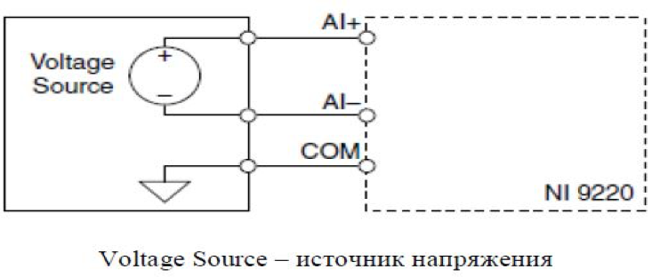
Цифровой модуль серии С NI-9375
Цифровой модуль C серии, 32 канала (вход Sinking, выход Sourcing), 7 мкс (вход)/500 мкс (выход), 24 В—Модуль NI 9375 — это интерфейс для цифровых линий, работающий с промышленными сигналами и логикой и подключающийся напрямую к различным промышленным выключателям, преобразователям и другим устройствам. Все цифровые входные линии совместимы с логическими уровнями до 24 В, а все выходные линии — с сигналами от 6 до 30 В в зависимости от внешнего источника питания. Модуль NI 9375 располагает поблочной изоляцией вводов и выводов, а также между каналами и заземлением.
Предоставляют возможности цифрового ввода и вывода для систем CompactDAQ или CompactRIO. Общий вид цифрового модуля представлен на Рисунке 15.
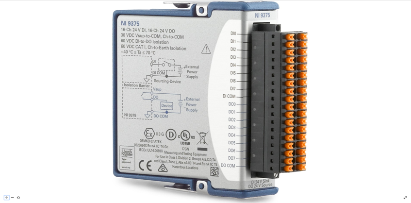
Цифровой модуль С-серии взаимодействует с широким рядом промышленных переключателей, преобразователей и других устройств. Некоторые модули оснащены индикатором состояния для каждого канала. Модули предоставляют входные/выходные цифровые линии или их сочетание. Они могут поддерживать различные значения напряжений и логические уровни, поэтому отлично подходят для ряда настольных и промышленных сред. Цифровые модули C-серии также предоставляют возможности гальванической развязки и возможности работы с током Sinking или Sourcing в целях повышения уровня защиты устройства цифрового ввода-вывода. При использовании цифрового модуля C-серии с CompactRIO можно применить LabVIEW FPGA для создания настраиваемых высокоскоростных счетчиков/таймеров, цифровых протоколов коммуникации, генерации импульсов и др.
NI 9375 обеспечивает соединения для 16 цифровых входных каналов и 16 цифровых выходных каналов. Схема расположения выводов указана на Рисунке 16, а схема подключения устройства к банку DO на Рисунке 17.
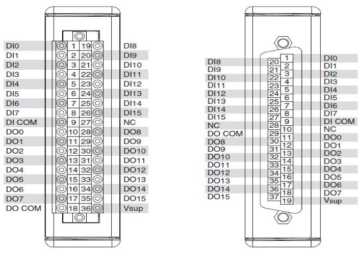
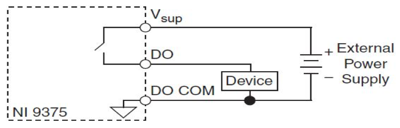
Модуль токового ввода серии NI 9208
NI 9208 представляет собой 32 канальный (для подключения несимметричных сигналов)/16 канальный (для подключения дифференциальных сигналов) модуль аналогового ввода.
Модуль NI 9208 имеет 37-ти контактный DSUB разъём, обеспечивающий подключение 16 входных аналоговых каналов. Каждый канал аналогового ввода имеет AI терминал, к которому можно подключить устройство аналогового вывода. NI 9208 имеет контакты питания VSUP 17 В, один для внешнего питания, и по одному на каждый канал. Также имеется четыре последовательных контакта СОМ. Контакты COM соединены внутри модуля с его общей землёй. На Рисунке 18 представлен общий вид модуля NI 9208.
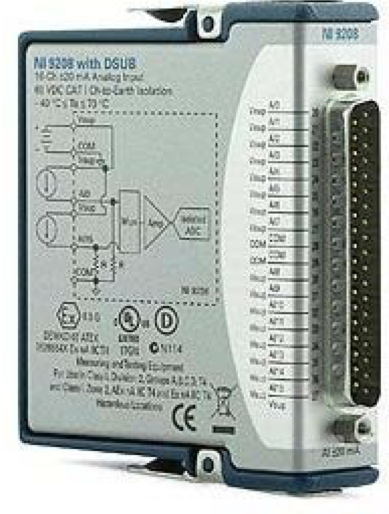
Все входные сигналы сканируются, усиливаются, согласовываются и затем оцифровываются 24-битным АЦП. Каждый канал также снабжен схемой защиты от перегрузок. На Рисунке 19 изображено назначение выводов модуля, подключение токовой петли к NI 9208 представлено на Рисунке 20.
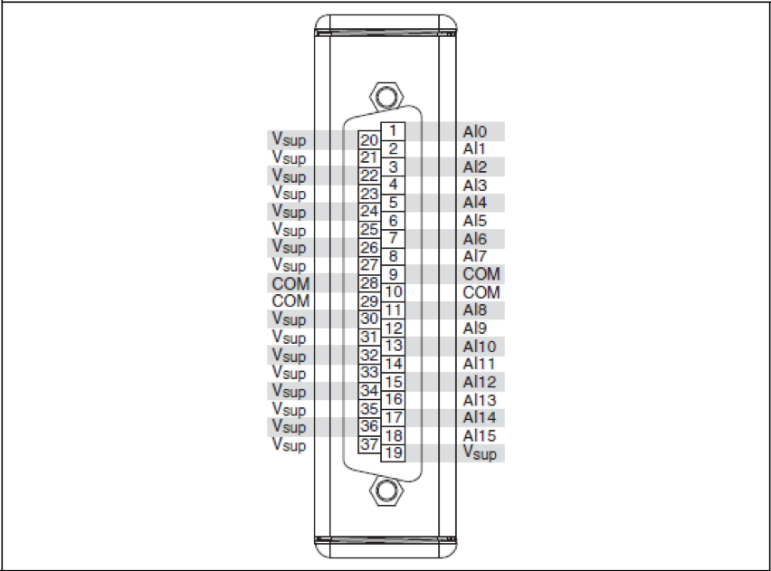
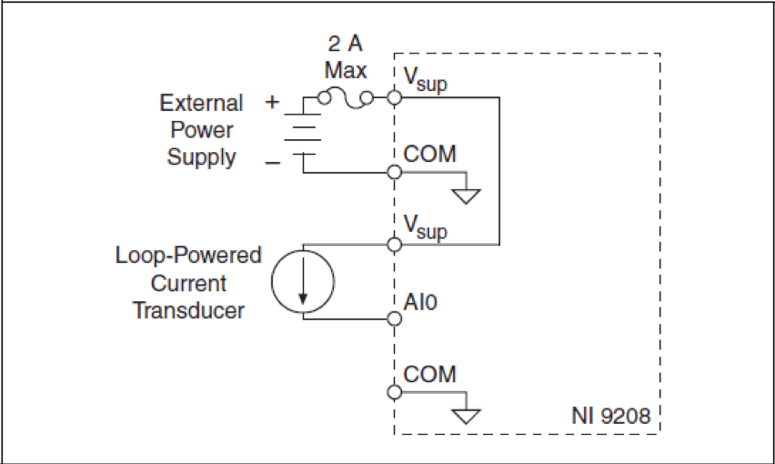
Алгоритм автоматизированного контроля режимов работы электродугового подогревателя
Была проведена работа по интеграции датчиковой аппаратуры и запорно-регулирующей арматуры, а также разработана схема электрическая принципиальная системы автоматизированного контроля режимов работы. Под автоматизацией контроля режимов работы в данной работе понимается обеспечение управления запорно-регулирующей арматурой по заранее заданной циклограмме, а также контроль режимных параметров на предмет их соответствия допустимым диапазонам и формирование индикационных и управляющих воздействий при отклонении. Согласно техническому заданию (п. 1.4) была разработана блок схема процесса автоматизированного контроля режимов работы плазмотрона. Схема представлена на Рисунке 21.
Алгоритм согласно блок схеме следующий.
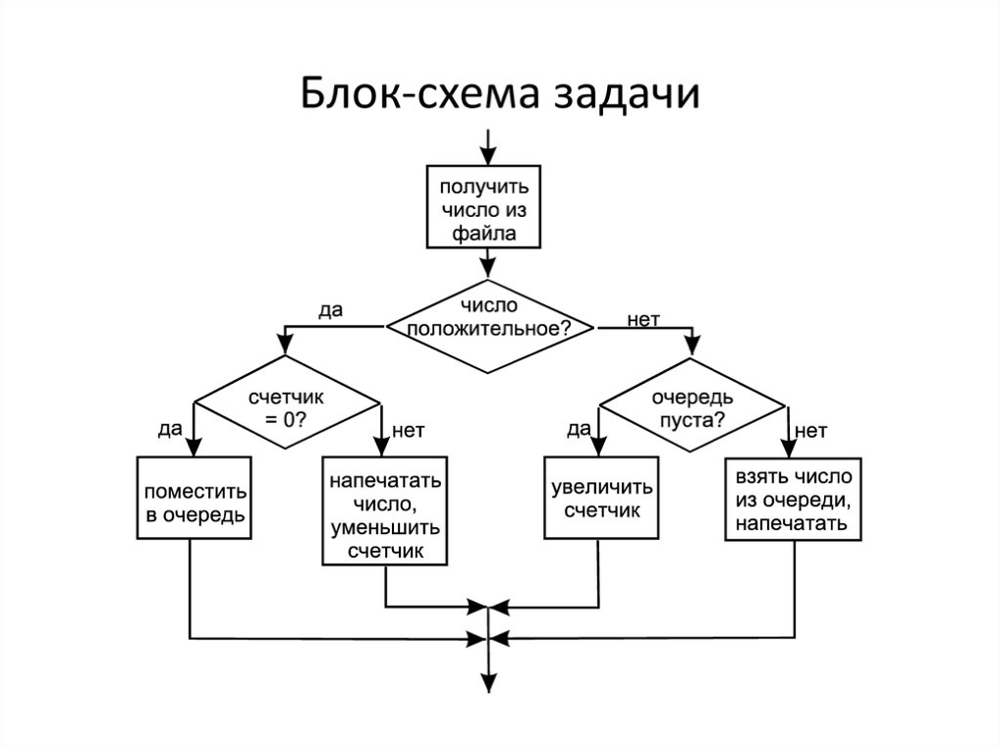
Таким образом интеграция в системы подачи носителей запорно-регулирующей арматуры, управляемой посредством представленного алгоритма, а также датчиковой аппаратуры, осуществляющей автоматизированную регистрацию и контроль режимных параметров позволяют в полной мере осуществлять функции автоматизации работы плазмотрона согласно техническому заданию.
Программа автоматизированного управления
В данной в работе, в качестве инструмента реализации функций программной автоматизации выбрано ПО LabView. LabView - это среда разработки, и платформа для выполнения программ, созданных на графическом языке программирования «G» фирмы National Instruments (США). Графический язык программирования «G», используемый в LabVIEW, основан на архитектуре потоков данных. Последовательность выполнения операторов в таких языках определяется не порядком их следования (как в императивных языках программирования), а наличием данных на входах этих операторов. Операторы, не связанные по данным, выполняются параллельно в произвольном порядке. Программа LabVIEW называется и является виртуальным прибором (англ. Virtual Instrument) и состоит из двух частей:
- блочной диаграммы, описывающей логику работы виртуального прибора;
- лицевой панели, описывающей внешний интерфейс виртуального прибора.
Виртуальные приборы могут использоваться в качестве составных частей для построения других виртуальных приборов.
Лицевая панель виртуального прибора содержит средства ввода-вывода: кнопки, переключатели, светодиоды, верньеры, шкалы, информационные табло и так далее. Они используются человеком для управления виртуальным прибором, а также другими виртуальными приборами для обмена данными.
Блочная диаграмма содержит функциональные узлы, являющиеся источниками, приёмниками и средствами обработки данных. Также компонентами блочной диаграммы являются терминалы («задние контакты» объектов лицевой панели) и управляющие структуры. Функциональные узлы и терминалы объединены в единую схему линиями связей.
На Рисунке 22 представлена блочная диаграмма разработанной программы автоматизированного управления плазмотроном. Алгоритм автоматизированного управления (Рисунок 21) выполнен на основе стандартного шаблона конечного автомата, где выполнение операций происходит последовательно, в зависимости от команд оператора. Однако реализация регистрации параметров режимов работы происходит за счет соответствующего драйвера, поэтому происходит непрерывно. Лишь чтение данных из драйвера осуществляется в момент, когда программа находится в состоянии ожидания, что никак не сказывается на точности работы. На Рисунке 36 показано лишь одно состояние конечного автомата – ожидание, когда непосредственно происходит чтение данных, их отображение, а также отображение состояние индикаторов – промежуточных реле.
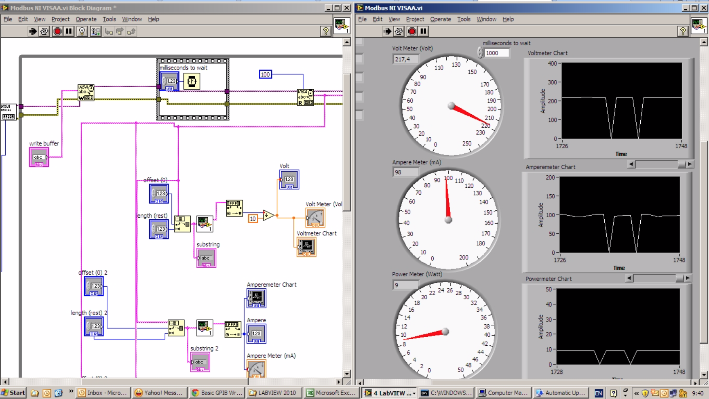
Заключение
В работе разработана автоматизированная система контроля режимов работы электродугового подогревателя средней мощности, линейной схемы.
Было разработано техническое задание на систему автоматизированного контроля режимов работы. На основании представленных данных была разработана комбинированная принципиальная схема систем, а также автоматизированной системы контроля режимных параметров работы плазмотрона.
В технологической части проведено обоснование выбора оборудования систем электродугового подогревателя, представлен алгоритм автоматизированного контроля режимов работы плазмотрона. Разработанная программа позволяет осуществлять функции регистрации режимных параметров и их анализ по заданному допустимому диапазону, а также автоматическую остановку работы в случае выхода параметров за их пределы заданного диапазона. Разработанная система контроля режимов работы была внедрена при проведении пуско-наладочных работ плазмотрона, в результате чего он был успешно запущен, а реализованные параметры его работы соответствовали заданным проектным значениям.